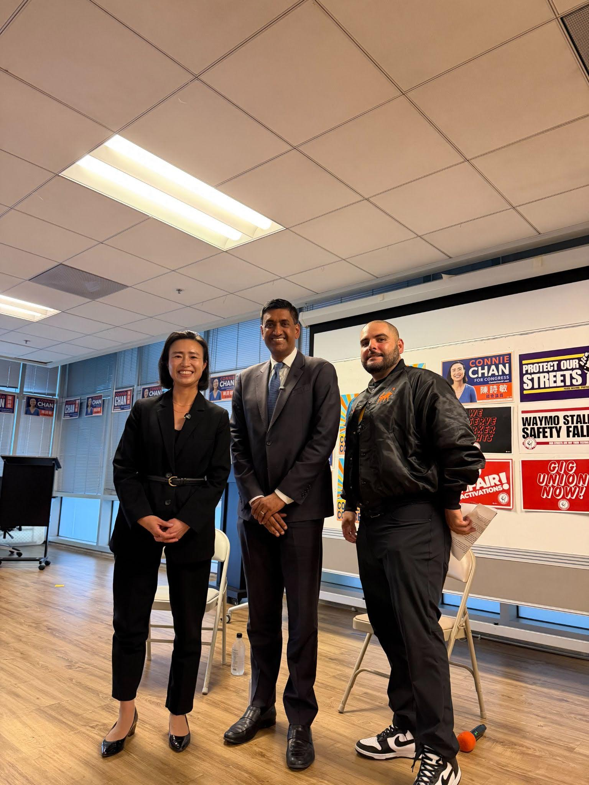
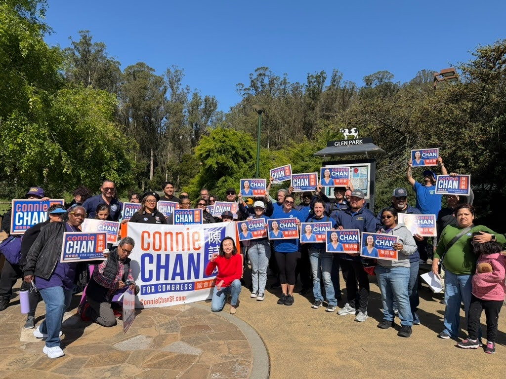

Dear barallies,
Last week, we held a town hall with Congressman Ro Khanna and the California Working Families Party to discuss some of the most important issues for voters.
How do we fight back against Trump? How do we prevent families from being priced out of the Bay Area? How do we fund priorities nationwide like Medicare for All, universal childcare, and Free City College?
The answer is pretty simple: We put working families before corporations. We make sure billionaires pay their fair share. We stop spending $1.5 trillion on war, and invest that money back into our communities.

I am grateful that Congressman Ro Khanna and California Working Families Party Director Jorge Contreras joined us at our town hall to talk with voters on how to stand up for working Californians in Washington D.C.
Our worker-centric policies are why corporate interests are spending big to prevent us from winning this seat. But I know we’ve got the people-power to beat them.
Can you
join us for a volunteer shift this week to help spread the word about Connie?

Join us for a volunteer shift this week!
Saturday, August 29th we will be canvassing in Glen Park at 10am. We will meet at the entrance of Glen Canyon Park on Chenery & Elk Streets.
RSVP here.
Sunday we will be canvassing in the Mission. Meet at our campaign headquarters at 3043 24th Street.
RSVP here to join.
Every Tuesday and Thursday
join us as we phonebank voters from our Campaign HQ.
Interested in visibility? Swing by the office (3043 24th St, San Francisco, CA 94110) anytime between 10am-6pm on weekdays and we’ll get you set up to do visibility at a
farmers market, or put up signs in your local neighborhood corridor.
Thanks for all your support.
In solidarity,
Team Connie